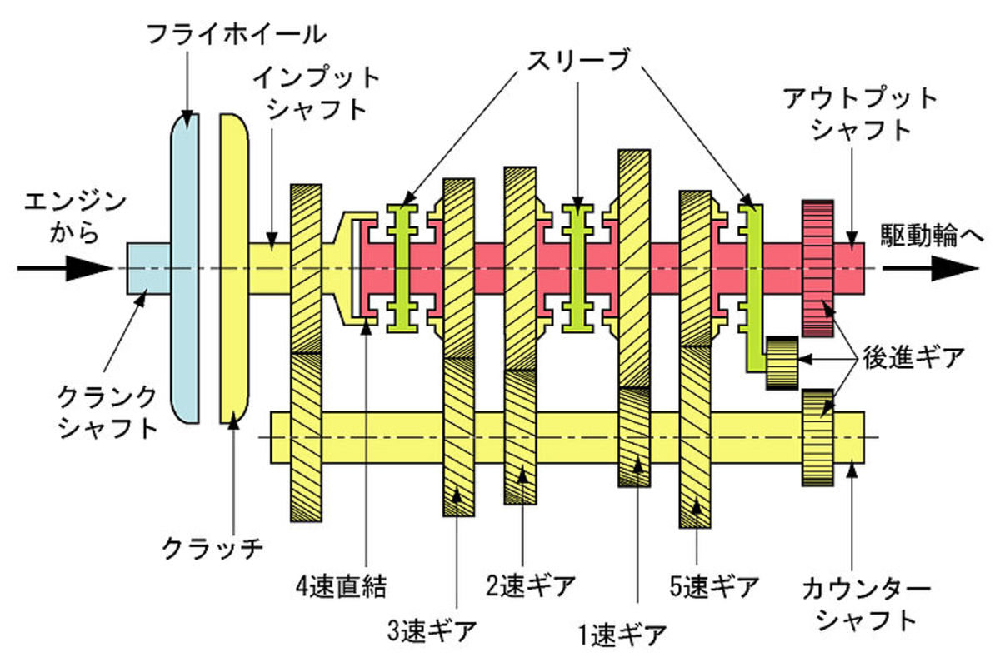

The Archetype of Rebirth¶

Mandalas¶
jungs language around connecting with the instinct
Harmonic experience¶
The phenomenal sense of temporal continuity is harmonic.
The relation of whole numbers to musical consanances was from all time looked upon as a wonderful mystery of deep significance - Helmholtz
Euler’s notion that the human mind has peculiar pleasure in simple ratio
The circular experience of time, our experience of time, syncronised with the world. A mind which rewards just-manageable challenges, clear proximal goals, and immediate feedback. Inventive and curious behavoiral traits. Friendly or compassionate engagemen with others. A sensitive or nervous affect.
The presence in time of concious control. The sub-conscious which notices small details and defends. The regulator is phasic dopaminergic signaling that orients us toward novel, surprising, or uncertain stimuli. And meta-monitoring processes that track our learning progress and stop us getting trapped. The illusion of self-determination. The invisible gold which mixes us from ourselves.
Time becomes a loop¶
mimetic / modality independent communication
Today we are certain that time itself runs on and does not return. However, notions of non-linear (periodic or cycical) time remain. The phenomenal sense of temporal continuity is periodic.

Human Body (heartbeat, respiration, sleep-wake cycle, circadian hormone secretion, among others)
Bantu culture
Nietzsche (western philosopher)
La Monte Young
Gene Ray, inventor of TimeCube
The origins of minimalism are contested.
LaMonte Young was born in a log cabin in Bern, Idaho. As a child he was influenced by the droning sounds of the environment, such as blowing wind and electrical transformers.
According to Young himself, “Nobody ever took an interest in writing sustained tones without melodies over them before me.”
“What La Monte introduced was this concept of not having to press ahead to create interest. He would wait for the music to take its own course.”
A mind that seeks to to trancend¶
Those changes which [we] can bring forth and annul by conscious impulses of the will are to be distinguished from those which are not consequences of the will’s impulses and cannot be overcome by such.
Helmholtz’s account of differential consciousness, resists binary view in favor of a fluidity that moves between the strict empiricist position that that knowledge comes only or primarily from sensory experience and a transcendental idealism which holds a belief in the essential unity of all creation, the innate goodness of humanity, and the supremacy of insight over logic and experience for the revelation of the deepest truths.
Dystopic claustraphobia is nothing new. The goal is not to revolutionise it. To follow a well trodden, but still dangerous path. But to live in a way that escapes or evades the closing in.
Sound and time¶
Because sound is a wave, it necessarily exists in time. As the neurons in the brain fire, the ion gates embedded in each one have to open up to allow time to pass. These nuerons are in some cases connected to the perceptual apparatus of the auditory system in human head, and ultimately the ears. As the conciousness projects its expectations along the perceptual channels of hearing in the human mind the sounds we are able to hear are characterised by being harmonic, or noisey, or like vowels or more rhythmic constants.
This aligns with the nature of language as a social technology we use to co-ordinate with each other through time. For example the development of the mouth has meant that speech allows us to be heard. Listening is in an evolutionary necessity if beings are going to communicate in the way that we do. This is bourne out by the fact that spoken language develops much earlier and more consistently than written language, or networked computer use.
The perception of sound¶
Acoustics proceeds as if sound were bare and empty of significance in a physics of the soundful
By living with electric instruments our experience of listening itself is being transformed, and included in this transformation are the ideas about ourselves and the world we inhabit
a discourse which seeks to unsettle the traditional ontological privilege of the visual in Western philosophy and explore various aspects of auditory phenomena and culture
Entrainment and Harmonics¶
Distinction between wavelengths we are reflectively concious of (steer our attention) and those we are interpreted sub-consciously and presented with as impact
Theta waves are: - 6-10hz - 6-7hz
6 = 166ms 10 = 100ms
Operating over time - time as measurement of periods of vibrations - root of all structure : le monte
Gestalt, alchemy and acousmatic hearing¶
The mind groups things automatically
Into sound objects
And groups of sound objects
https://en.wikipedia.org/wiki/Gestalt_psychology https://en.wikipedia.org/wiki/Max_Wertheimer#Productive_thinking https://archive.org/details/in.ernet.dli.2015.198039 https://en.wikipedia.org/wiki/Kurt_Koffka#The_Principles_of_Gestalt_Psychology_(1935)
describing the ways in which cognitive function results from brain activity. In turn, brain activity shows complex fluctuations, with structure at many spatio-temporal scales. Exactly how cognitive function inherits the physical dimensions of neural activity, though, is highly non-trivial, and so are generally the corresponding dimensions of cognitive phenomena. As for any physical phenomenon, when studying cognitive function, the first conceptual step should be that of establishing its dimensions.
https://en.wikipedia.org/wiki/Don_Ihde
Entrained externally? Aesthetically? Attention, memory, emotion and language
The less we just stare at the hammer-thing, and the more we seize hold of it and use it, the more primordial does our relationship to it become, and the more unveiledly is it encountered as that which it is—as equipment. The hammering itself uncovers the specific ‘manipulability’ of the hammer. The kind of Being which equipment possesses—in which it manifests itself in its own right—we call ‘readiness-to-hand’.
The reductionist bias: https://www.cell.com/neuron/pdf/S0896-6273(16)31040-6.pdf
https://www.youtube.com/watch?v=5Ig98tWMq0U
https://www.youtube.com/watch?v=5Ig98tWMq0U
https://www.sciencedirect.com/science/article/pii/S0149763421001755 https://www.ncbi.nlm.nih.gov/pmc/articles/PMC3889703/ https://plato.stanford.edu/entries/consciousness-temporal/ https://www.elektronauts.com/uploads/default/original/2X/1/117895063c813d7fb0f1af38104b662c278e9007.pdf https://www.contempaesthetics.org/newvolume/pages/article.php?articleID=582
Field Dynamics¶
Able to speak and hear - highly evolved categories. We ourselves are simply complex disturbances of quantum fields, able to emit and recieve. We have emotions thought of as unconscious, or deeper than conscious constructs and foundations. These internal fields are how we tell stories to ourselves as we pass through time.
Nature as objects of respect and wonder as opposed to standing reserve
What we ‘first’ hear is never noises or complexes of sounds, but the creaking waggon, the motor-cycle. We hear the column on the march, the north wind, the woodpecker tapping, the fire crackling… It requires a very artificial and complicated frame of mind to ‘hear’ a ‘pure noise’.
Purpose¶
“During this period of concentration, I created a monotone symphony whose theme expresses what I wished my life to be.” – Yves Klein

The idea that we have no purpose is nonsense. If the field we inhabit is indeed infinite and multi-dimensional, then there must be some regularity in how things are distributed in time and space, in order to explain our subjective experience of time. That we are aligned with this regularity is sufficient to prove we have purpose.
For example we are only successful as a species when we are able to procreate. Many of our structural characteristics and experiences from youth through to late middle age are conditioned by this urge. This is an example of a deep structural chacteristic being causally associated in time with success.
Psychedelia relates to the natural state of a child. Naive mirror neutrons captured in their elemental state of awe. The mirror can be the mimic, the memory, harmonious and engaged.
Ordered reflections. Dreams and visions and emotions. The layer in between the stable and the varying. Repose in the sensation that rests us from intense compulsion to focus, analyse, frame, categorise, isolate. That which energises us makes us live richly. That which reinforces support emotional freedom. Close friends and family help us maintain perspective and laugh.
Through a practice of deep listening, an awareness of the spatiality of sound phenomenon. Take some of these escapist ideas seriously.